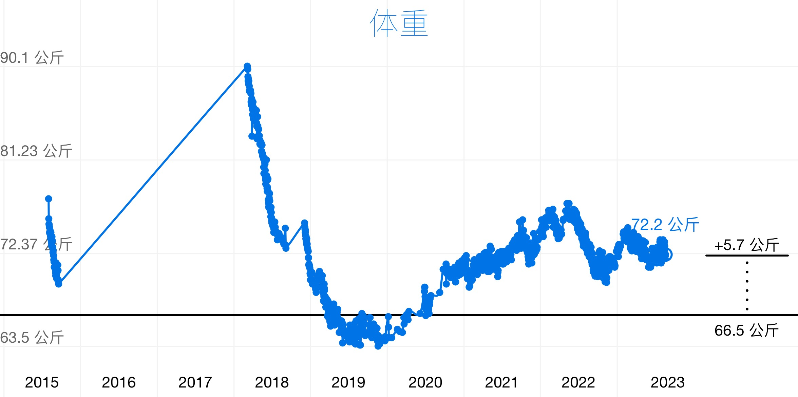
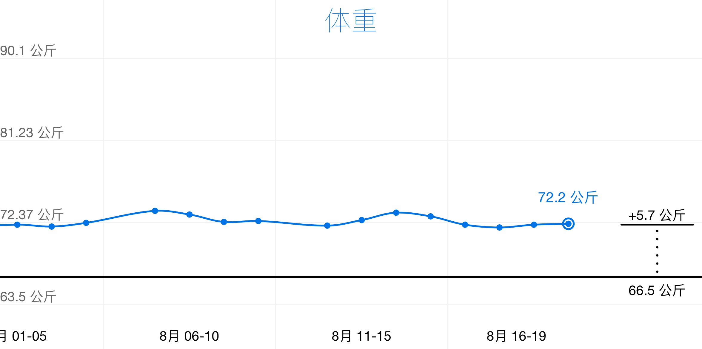

记录体重
人们常说减肥是一辈子的事情，我以前也是这么认为的。我也一直在为减肥而努力，最早从大学就开始努力了（for a girl）。直到今年放下了，不再那么挣扎了。
因为减肥，我养成了一个习惯：记录体重。
尽管现在的体重还在超重线以上，但也不再追求降低体重了，减几斤肉实在太难了。虽然不以减肥为目的，现在仍然每天称一次体重，已经养成了一个固定的习惯。

我使用「瘦身旅程」APP 来记录体重，最早一次的记录产生于2015年8月1日，记录半年后断了2年。之后又持续记录，从最早的记录点算起到现在已经8年了。
我曾经最重达到90kg，最轻的时候是65kg。最高和最低相差25kg，也就是50斤。这么大的跨度我说自己减肥成功过不过分吧？
把时间拉到一个月为纬度时，可以发现一个规律：每周一早上的体重为波谷，周六早上的体重为波峰。这是因为周一至周五为工作日，作息相对规律，中午还会有运动，饮食也比较注意，所以周六早上的体重是一段时间内的最低点。
周六日的放纵会导致体重反弹至高点。周六、周日两天我会出去找好吃的，炫冰淇淋、可乐、炸鸡。我知道这是个非常不好的习惯，但很难改掉。五天的工作让我的欲望被压抑，只能在这两天得到释放。

持续记录体重有好处，可以观察身体变化。如果今天体重低了，可以回想一下前一天做了什么；如果今天体重高了，也可以回忆一下昨天的饮食。虽然不再追求减肥，但仍在努力阻止熵增。我知道在没有外力的作用下，我的体重只会无限制上涨。
此外，持之以恒地记录使我每次看到历史跨度很长的趋势图时都很有成就感。
学习英语
我养成的另一个长期习惯是学习英语。以前我用了「不背单词」这个APP，在连续365天后解锁了其中所有的权益，后来突然有一天感觉没有意思，就卸载了。
现在我在使用「多邻国」学习英语，它不需要背单词，而是通过语境学习每个单元，包括完整的句子、对话和语法。到今天，我已经持续学习了将近500天。
我每天学习英语的时间点是早晨上厕所（shit）的时候，利用10分钟学习，时间刚刚好可以学到获得当天宝石的进度。选择这个时间点的最主要原因是，这段时间是当天最早一次长时间使用手机的时间段，我不想把每天最早的宝贵时间用在刷无用的内容上，而是用学习英语当做一天好的开始。
上完厕所、学完英语后就是就是称体重环节，两个习惯就这么串起来了。这种叠加方式也是「掌控习惯」这本书中介绍过的培养习惯的一个非常好的方式：继【当前习惯】之后，我将会养成【新习惯】。
将学习英语和称体重这两个习惯作为每天早上的固定仪式，就像是生活中的支点一样，因为生活和工作的节奏太快，需要给自己找到一些确定性，以便能够掌控自己的生活。虽然这两件事很小，但它们帮我获得了很大的掌控力。
这种超长期周期的持续也让我明白了一个道理：
坚持一件小事，是靠意志力；长期坚持一件小事，是靠习惯。
坚持一件大事，是靠价值观；长期坚持一件大事，是靠信仰。